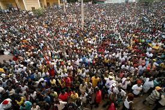
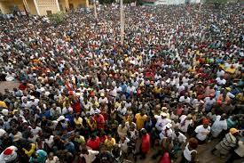
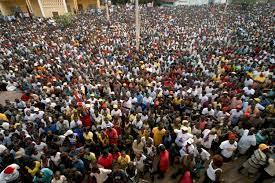

Our country is a create please to learning a lot about Africa culture
Background: Guinea-Bissau was the only country in West Africa to have fought its way to independence. The war with Portugal ended in 1974, but since the country has been plagued by coups and political unrest. In 1980, a military coup established authoritarian dictator Joao Bernardo 'Nino' VIEIRA as president, VIEIRA was a key figure in struggle against Portuguese colonial rule. Despite setting a path to a market economy and multiparty system, VIEIRA's regime was characterized by the suppression of political opposition and the purging of political rivals. Several coup attempts through the 1980s and early 1990s failed to unseat him. In 1994 VIEIRA was elected president in the country's first free elections.

Capital city: Bissau